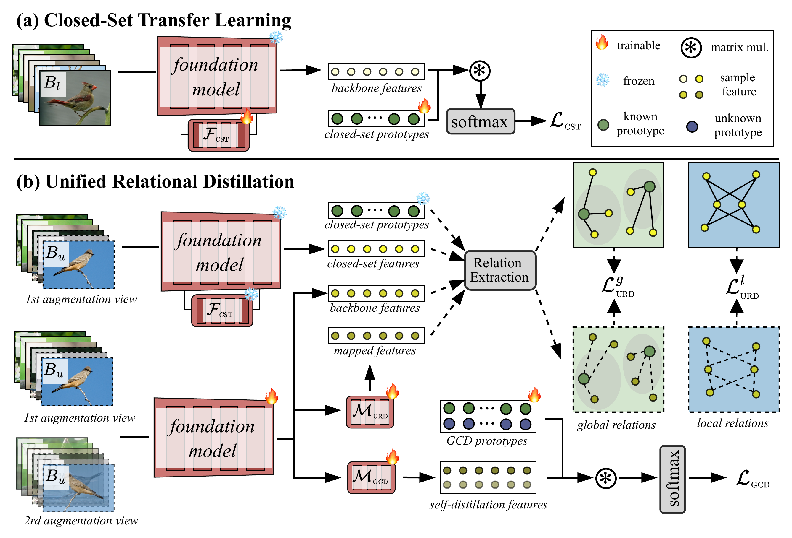
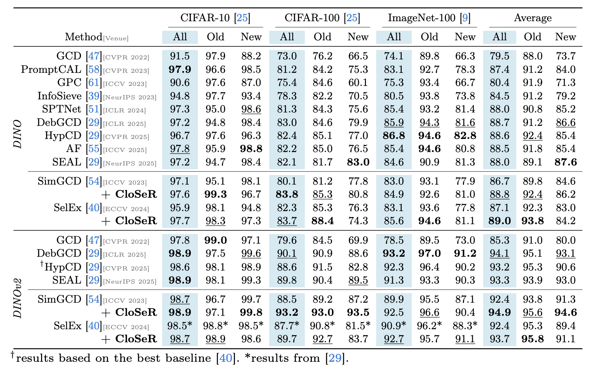
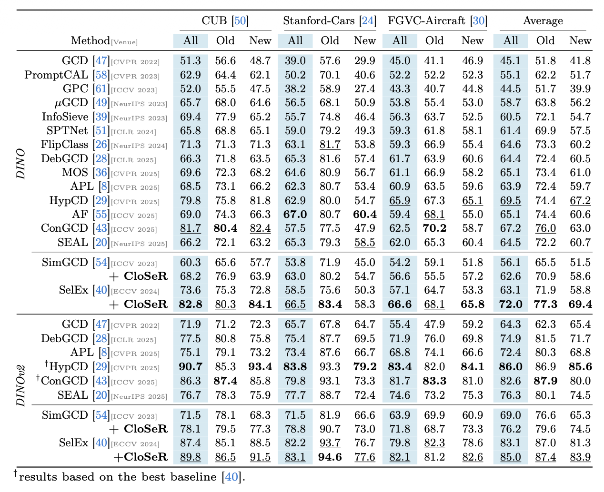
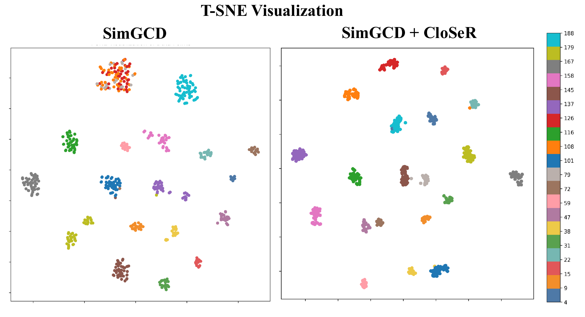
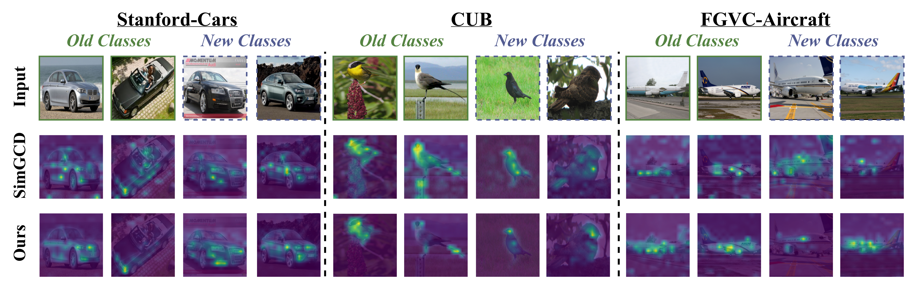

Generalized Category Discovery (GCD) aims to recognize known classes while discovering coherent novel categories from unlabelled samples. Recent methods often jointly optimize supervised classification and unsupervised discovery objectives on mixed labelled-unlabelled data, but this coupled training can entangle closed-set recognition with open-set discovery, causing objective conflict, biased predictions, and disturbance to the semantic geometry of pretrained representations.
We propose CloSeR, a simple plug-and-play framework that injects Closed-Set Relational knowledge into GCD training. CloSeR first builds a domain-adapted closed-set teacher by tuning lightweight block-wise adapters on labelled known-class data while keeping the foundation-model backbone frozen. It then transfers the teacher's knowledge through Unified Relational Distillation, combining global sample-to-prototype relations and local sample-to-sample relations with separate feature pathways.
CloSeR is head-agnostic and integrates with both parametric and non-parametric GCD methods. Across six benchmarks with DINO and DINOv2 backbones, it consistently improves strong baselines and achieves state-of-the-art performance.

CloSeR follows a staged design. In Closed-Set Transfer Learning, lightweight block-wise adapters adapt a frozen foundation model using labelled known-class data, producing a closed-set teacher and class prototypes. During GCD training, Unified Relational Distillation transfers global sample-to-prototype relations and local sample-to-sample relations from this teacher into the student model, stabilizing category discovery without tying CloSeR to a specific prediction head.
CloSeR is evaluated on CIFAR-10, CIFAR-100, ImageNet-100, CUB, Stanford-Cars, and FGVC-Aircraft with DINO and DINOv2 backbones. It improves both parametric and non-parametric baselines, showing that closed-set relational knowledge is broadly useful for transfer clustering.


The t-SNE visualization compares SimGCD with SimGCD+CloSeR. CloSeR yields cleaner clustering structure, improving intra-class compactness and inter-class separation.

Attention maps further show that CloSeR focuses on category-discriminative object parts across Stanford-Cars, CUB, and FGVC-Aircraft, including both old and new classes. This supports stronger fine-grained recognition and more reliable novel-category discovery.

@inproceedings{
title = {CloSeR: Unified Relational Distillation from Closed-Set Teachers for Category Discovery},
author = {Liu, Yuanpei and He, Zhenqi and Tang, Jialu and Han, Kai},
booktitle = {ECCV},
year = {2026}
}